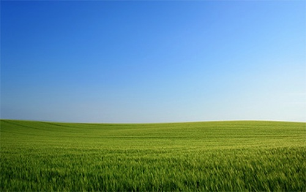
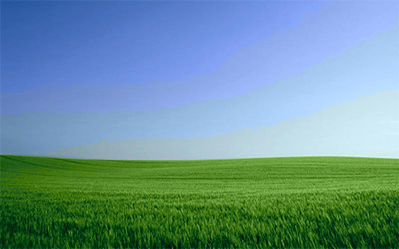
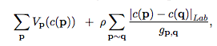
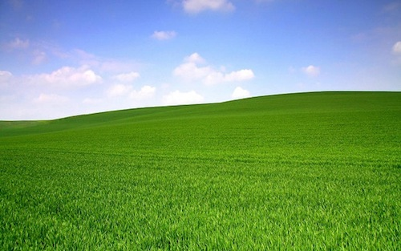
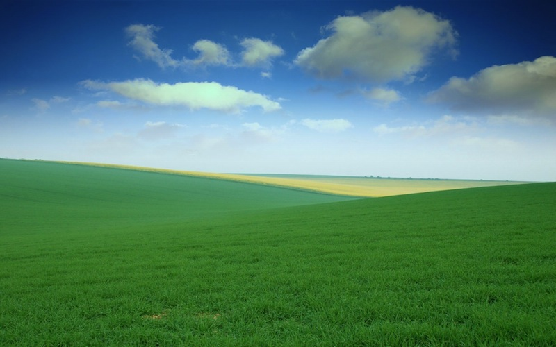
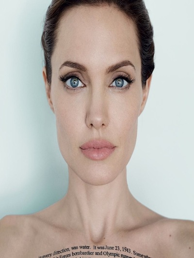
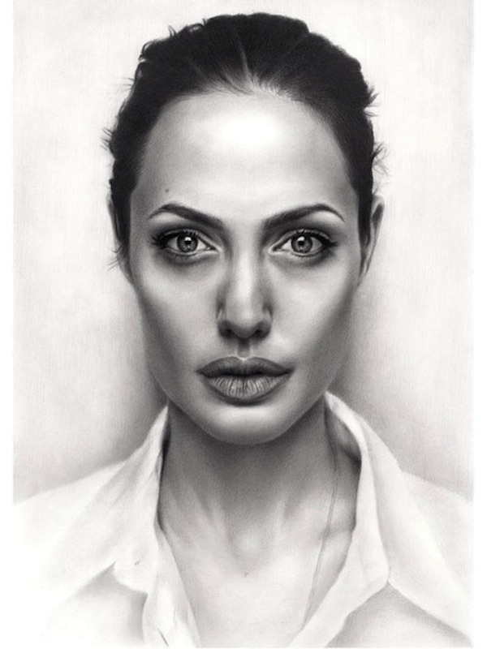

This is a classic project that involves the machine learning side of computer vision. The project is re-implementing the results found here by Guillame Charpiat. In this project,I attempt to automatically colorize grayscale images based on training images that already have color. By using information about each pixel in the training images as features, and the colors of the respective pixels as labels, I trained an SVM classifier. Once I had the classifiers, I predicted values for each pixel and used edge detection and graph cut optimization to get the resulting colored images.
Although predicting RGB values for each pixel seems like the logical way to formulate this problem, but in the case of the paper and many similar experiments, the Lab color space does better. This is simply because better approximates human perception of color and because L represents the lightness of an image,which is essentially how dark or light a specific color is. This is important because we need a color space that is robust to lightness, as the training images may have different shades of the same color. By using this space instead of RGB, we can make our preset color labels robust to L. Since the Lab color space captures all possible colors, there are too many class labels, so I had to discretize the color space. I did so using k-means clustering on the a and b values
|  image with regular color mapping |
 image with discretized color mapping (k=10) |
In addition the lab components described above, I needed to find a good set of features to represent pixel color information and assign colors to the right places in the image. This reminded me of feature matching in automatic image morphing and allowed me to recall the SIFT descriptor, which basically captures the local context of the image.After reading a bit, many implementations of SURF are much faster than SIFT and more robust to image transformations. As a result, I used SURF features. In addition, the paper suggests localized mean and variance features to capture image texture, and also the laplacian filter features over that window to capture frequency information. Since all this information results in a very high dimensional space, we used PCA to reduce the feature space to somewhere from 32 - 64. We did this for a random sample of pixels from each image, since using all 40,000 pixels from a 500x800 image would be too computationally expensive. In this case, I chose 10,000 samples from each training image
After I had the pixel features and the discretized Lab color space, I trained binary SVMs for each color in the discretized space. Once we trained all these classifiers, we needed to predict which colors belong where. However, it was important to compute probabilites since a pixel can potentially have multiple colors or no color.
Now you may be thinking, why didnt you use logisitic regression Vash, it provides classification as well as the probabilties. One thing to note is that kernelized SVMs are very easy to use in sklearn and can encode complex decision boundaries. Kernelized Logitic Regression is not as readily available and would require usage of SVRs, which empirically do poorly with this kind of task(see paper). Another option that was much quicker was to use the SVM margins as a substitute for the conditional probability of a color given pixel information, as the probability feature of sklearn's SVM functionality is quite slow.
Now that we have predictions for lab-space colors for given gray-scale pixels, we can also estimate the probability of a color varying at a given pixel position. Given the current set of features, we only take into account local neighborhoods of pixels. The paper,however,suggests incorporating more global information to yield optimal colorizations.Charpiat argues that with the current featuer set, a pixel's best color is only influenced by the probabilties in a local neighborhood. Since these neighborhoods are connected, there is a global interaction between all pixels.Thus,it is important to incorporate global information to get spatially coherent colorization.To do so, I used a graph cut library, as suggested by Charpiat
|  Equation to find the minimum pixel color for a pixel p |
The V function here is the "cost of choosing pixel color C(p) for pixel p", which in the case of SVMs is the negative proability score of a class. Since we are using margins for saving computation time, we set V to be the negative margin. ρ is the hyper-parameter that tradesoff the weight of local color scores to spatial coherence scores. It is estimated with cross validation. q corresponds to pixels neighboring p and the variable,g, is the harmonic mean of estimated color variations for pixels p and q
As with any machine learning model, there are hyper-parameters which are not learned by the model and need to be chosen by the user. In my experiments, there are a number of hyperparameters, including: localization window size, PCA feature size, k for k-means(aka the number of distinct colors), and SVM regularization parameters. Since it would a computational nightmare to a grid search over numerous values for these parameters, I chose a small subset of values for each hyper-params and perform cross-validation optimization for those values
Now up to this point, I have not defined an error metric for optimizing these hyper-parameters. In my first run of experiments I simply used the eye test to see if an image was colored right. Then in later runs, I converted all the validation images to grayscale, colorized them, and took the mean squared error over the a and b components of each image's lab space. I did this because comparing MSEs in RGB space would not be robust to changes in luminance. Consequently, I decided to keep the hyperparameters that resulted in the lowest MSE
Here are some results of colorization after training
Here is an example of where I use a small set of different images to color an image with the same features. I chose a set of pictures of grassy plains and here are the results:
|  training image 1 |
 training image 2 |
grayscale image |
colorized image |
Now here is an example of when we use a single image to apply color to a grayscale image. I wanted to see how a color picture of Angelina Jolie could transfter to black and white drawn portrait
|  color image |
 grayscale image |
This project was really fun because it involved a lot of machine learning, which I really enjoyed. It posed a fun, simple problem that was easy to validate and had reproducible results. The best part about this project, in my opinion, was the incorporation of both machine learning issues such as dimensionality reduction, clustering, and hyperparameter optimization and general computer vision issues, such as finding the best feature to represent the color of a given pixel. All in all, maybe not the most groundbreaking, but definitely interesting and taught me a lot more about machine learning in computer vision